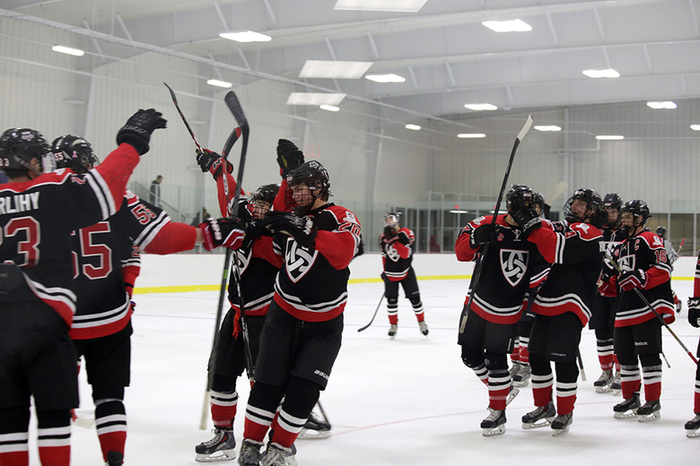

Story about my journey
Home page
About me

I am from just outside of Stockholm in Sweden where I spent the first 15 years of my life before moving away from home to the US. I spent two years at an all boys prep school called South Kent before moving to Green Bay, Wisconsin to play hockey In the USHL and attended my senior year of highschool.
I have three younger siblings, two sisters Alice and Hilda and my brother, Eric. My mom and dad are divorced. But I have a good relationship with both of them.